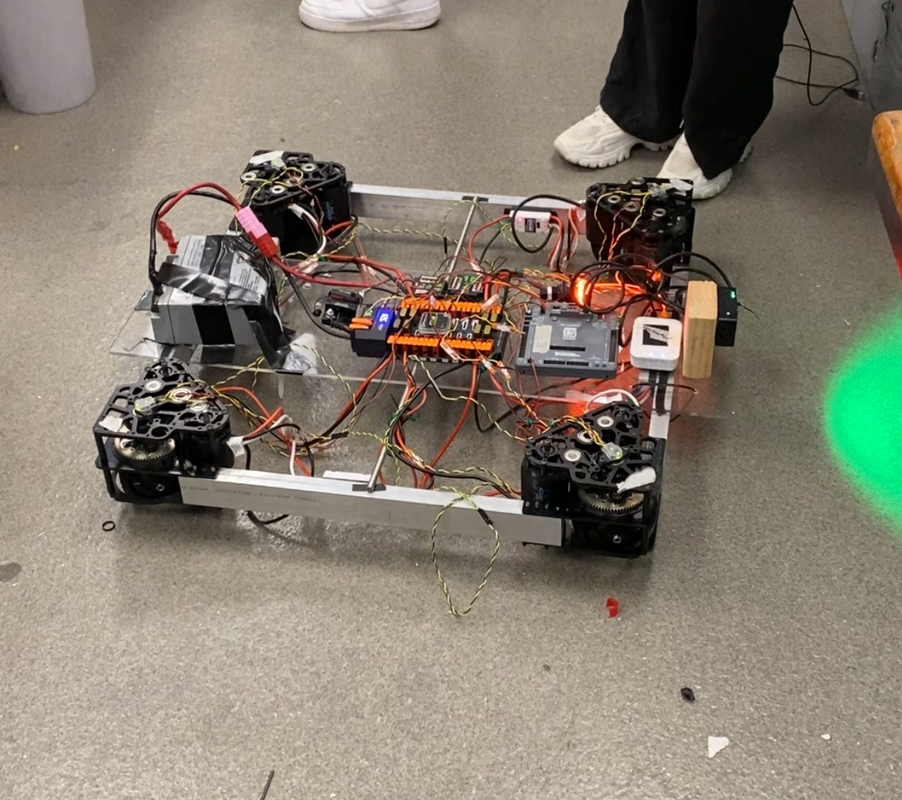

Omnidirectional Drivetrain (Swerve Drive)
Goals: Build a new drivetrain with modern motors, controllers, and functionality. Establish a foundation for autonomous driving with camera vision and easier handling for the driver. Improve PID control and tuning.
Results: Upgraded drivetrain moves 39% faster with AprilTag vision capability. Added two odometry options (computer vision and encoders) and easy module alignment and setup with bolts. Supports pre-programmed autonomous routines and improved software for easier PID tuning.
Skills: PID control, Java, computer vision/Limelight, parts selection, budgeting